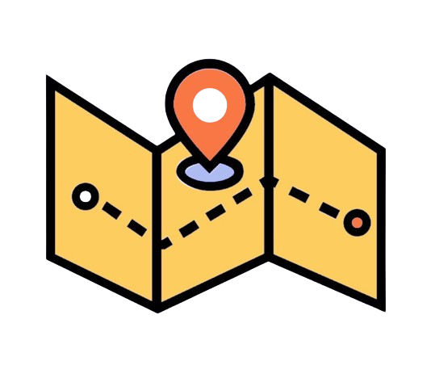
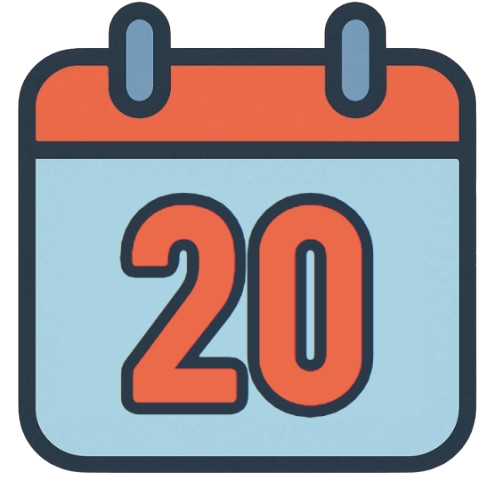

Menü
|  | Dresden Neustadt |
|  | 20. bis 21. Juni 2025 |
Kontakt
louisenfest_dresden
louisenfest@outlook.de
Liebe Nachbarinnen und Nachbarn, der Sommer kommt und mit ihm das Louisenfest!
Am 20. und 21. Juni feiern wir wieder gemeinsam in unserer Neustadt. Zwei Tage voller Leben, Musik, Kreativität,
guter Gespräche und allem, was unser Viertel so besonders macht.
Inhaltsverzeichnis:
Das Louisenfest lebt von dem, was ihr draus macht: euren Beiträgen, eurer Kreativität und eurer Lust, etwas auf
die Beine zu stellen. Wir laden euch herzlich ein, selbst Teil des Festes zu werden!
Habt ihr Lust, euch zu verwirklichen?
Vielleicht spielt ihr Musik, baut Kunstwerke, kocht, bastelt, tanzt, singt, schreibt, zaubert, jongliert -
oder habt einfach eine schöne Idee für einen eigenen Stand? Hier erfährst du mehr zur Teilnahme.
Denn hinter den Fenstern und Türen unserer Straße schlummern Talente, Geschichten und Ideen und genau die wollen
wir gemeinsam auf die Straße bringen.
Einige eurer Ideen oder liebevoll gestalteten Häuser und Ecken werden uns sicher besonders im Kopf bleiben. Dafür
haben wir im Anschluss ein kleines Dankeschön von Läden aus der Neustadt.
Mit einer vergrößerten Veranstaltungsfläche und mehreren Bühnen gibt es viele Möglichkeiten, sich einzubringen - ganz gleich, ob ihr auf der Bühne stehen wollt oder etwas ausstellt, verkauft oder anbietet.
Kommt vorbei und lernt uns kennen-jeden Dienstag um 19 Uhr im Habibi (Martin-Luther-Straße 37). Oder schreibt
uns:
Louisenfest@outlook.de
Instagram: @louisenfest_dresden
Für das Fest werden einige Straßenabschnitte von Freitag (20.6.) ab 12 Uhr bis Montag (23.6.) um 8 Uhr gesperrt. Die Linie 13 wird in dieser Zeit umgeleitet. Bitte parkt eure Autos rechtzeitig um und nutzt die Gelegenheit, selbst mit einem Stand oder einer Aktion dabei zu sein! Wir danken euch schon jetzt für eure Rücksicht - und freuen uns auf eine wunderbare Zeit mit euch allen!